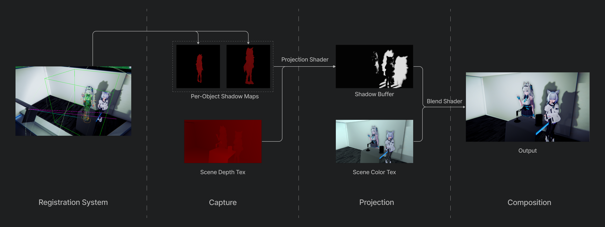
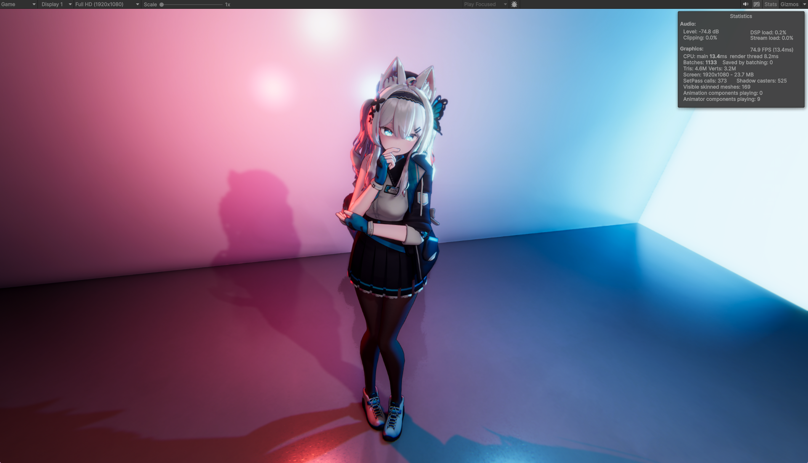
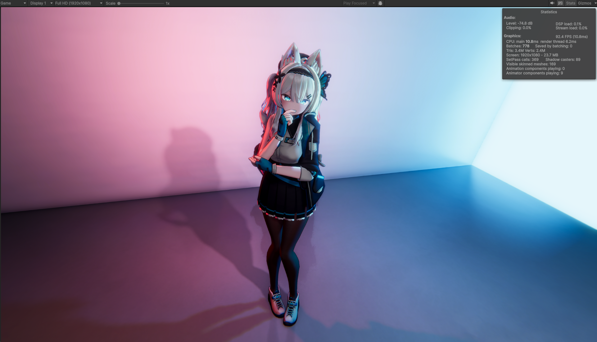
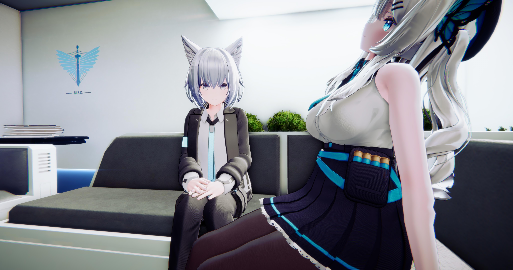
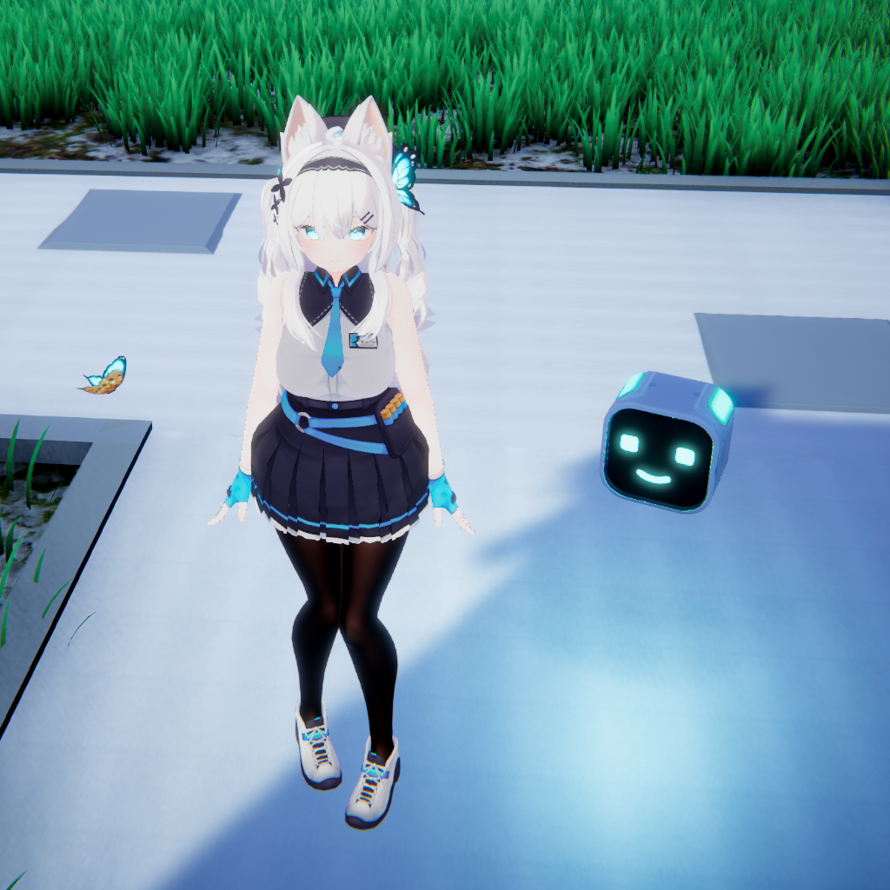
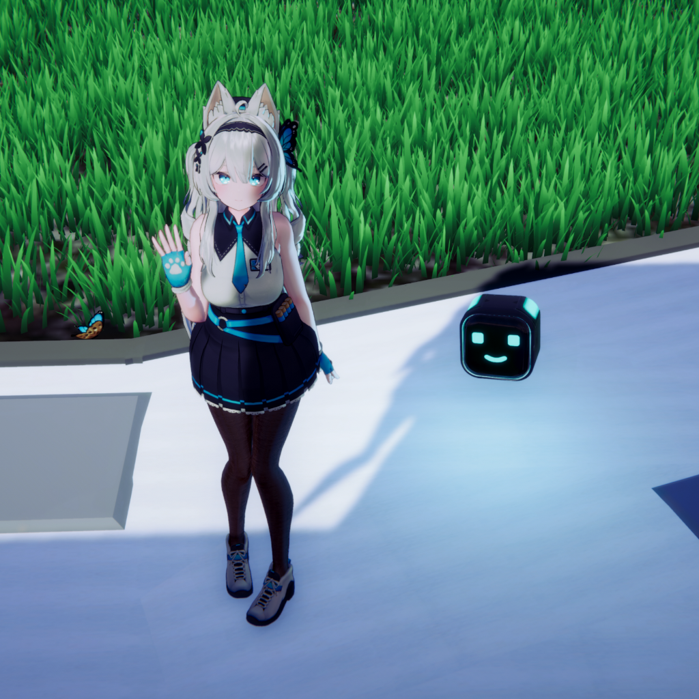
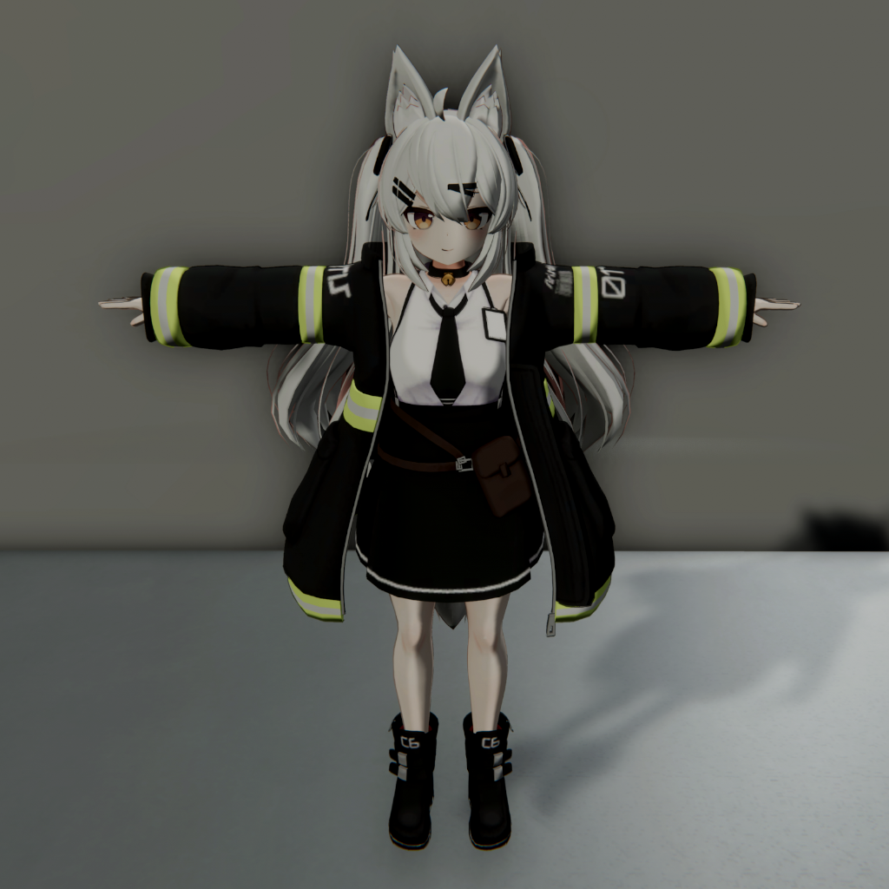
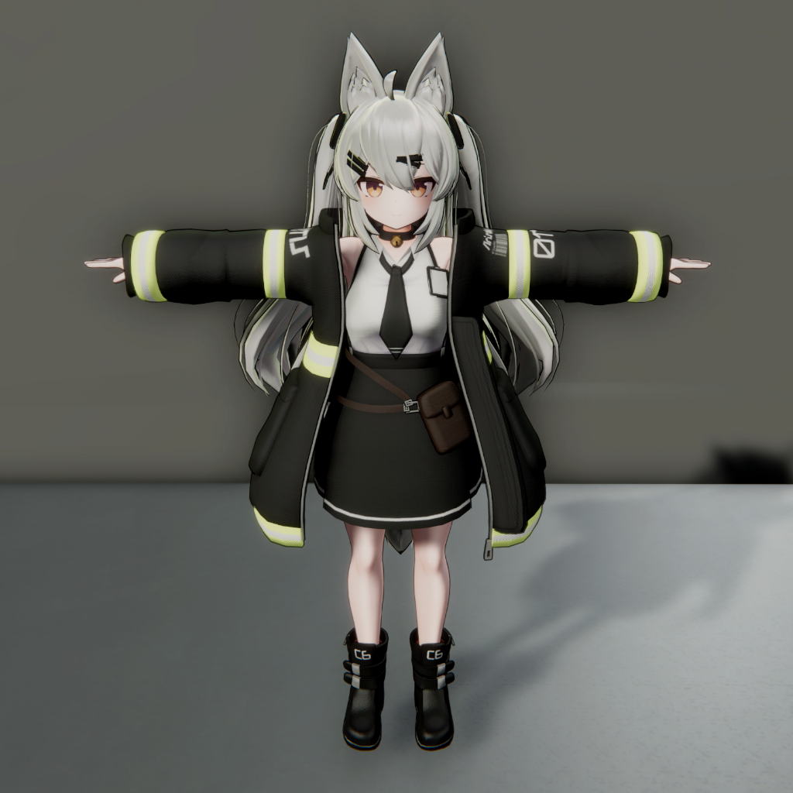
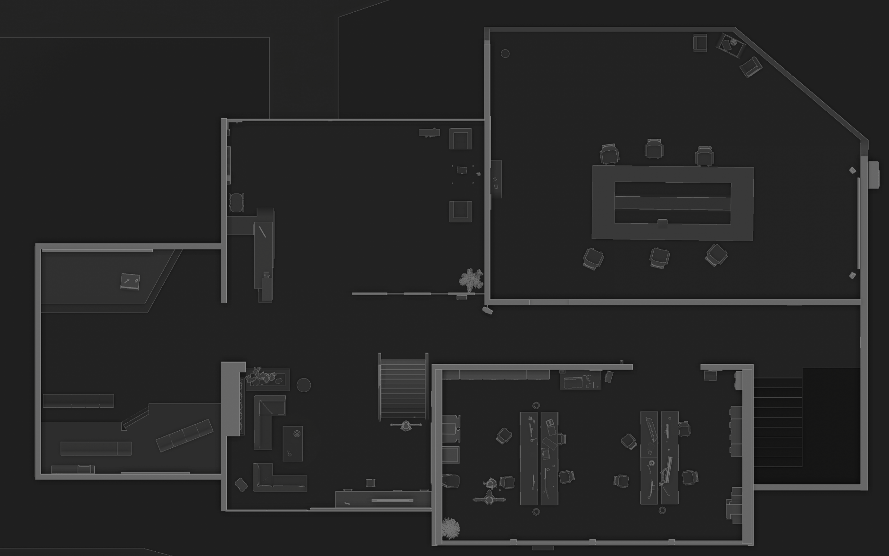

I build rendering systems that solve real production problems -
optimized for performance, designed for art direction.
Per-Object Shadows URP
Real-time shadow rendering is a major performance bottleneck. In scenes with complex lighting, shadow cost doesn't scale with what you actually need. This system provides high-fidelity, artist-controlled shadows for dynamic characters without the overhead of global shadow maps.
While many standard shadow techniques exist for modern pipelines, they fail to address a core issue:
rendering full real-time shadows and wasting resources on static geometry for just a few dynamic shadow
casters. In our
top-down scene or a complex environment, that tends to be very costly.
I researched various approaches to address this issue:
| Technique | Dynamic-to-Static | Static-to-Dynamic | Cost Scales With | Artistic Control | Typical Limitations |
|---|---|---|---|---|---|
| Shadow Map & Culling (ReSTIR) | Yes | Yes | Scene complexity | Poor | Complex, disproportionate culling poor performance in topdown |
| Shadow Mask / Probe Volume |
No | Yes | Data sampling | Moderate | Poor dynamic-to-static support (where our system step in) |
| MDF + Raymarching (DFSS) | Yes | Yes | Scene complexity | Moderate | Blurry, unstable, unscalable, only static DF support |
| Virtual Shadow Maps | Yes | Yes | Shadow quality | Pool | Limited global light, unscalable, UE5 nanite only |
| Ray Tracing | Yes | Yes | Constant | Pool | Very costly, limited platform support |
| Capsule / Decal Shadow | Crude | Work around | Shadow count | Good | Only stylized shapes, no real lighting |
| Per-Object Shadow | Yes | Work around | Shadow count and quality | Good | Limited static occlusion, possible glitching, needs artistic alignment |
We concluded for scenarios with complex lighting but only a few dynamic shadow casters — like our top-down environment — per-object shadow rendering is the natural solution.
Starting with Unity's Decal Projector as a prototype, I tried capturing character
silhouettes and projecting them as shadows. Then I replaced silhouettes with actual depth
maps. This unlocked light attenuation and PCSS, giving the shadows proper falloff and soft edges.
However, this approach worked for directional lights. It hit a fundamental limitation: Decal Projectors
are orthographic by design
and cannot correctly project point light shadows, beyond that, they weren't built for shadows — they
introduced pipeline overhead and interfered with actual decal rendering needs.
The production system needed to be purpose-built.

The resulted system is a custom URP Render Feature built on Render Graph. It consists of four core components:
Registration System
Actor-light pairs are registered dynamically via trigger volumes. When a character enters a light's
influence range, the system adds them to the shadow rendering queue. This keeps the overhead
proportional to active pairs, not total scene complexity.
Shadow Rendering
Each registered pair gets a virtual camera positioned at the light source, with a projection matrix
computed based on the character's bounding box. The camera captures a high-resolution depth map just for
that character, at a resolution the character defines. No scene geometry involved.
Projection & Occlusion
The depth map is projected using the light's perspective matrix — true perspective projection for point
lights. With screen depth to world space reconstruction, the system factors in light attributes,
attenuation and edge-soften. Occlusion is handled via batched physics raycasts (not raymarching) — a
pragmatic trade-off between accuracy and performance to check light-to-character visibility and clips
shadows at wall boundaries.
Screen-Space Compositing
Shadows are composited into screen space using a pre-multiplied blend with conditional masking. The
system identifies lit areas and ignores areas already in shadow. Artists control intensity, edge
softness, color tint, PCSS samples, and blend factors. Because it's a post-process overlay rather than
baked into the lighting pipeline, artists have full control over the shadow's visual appearance without
touching shader code.
The system renders high-quality, artist-controlled PCSS shadows at ~3ms per frame — cost scales only with the real shadow count and quality.
This approach enables us to fully bake global lighting and render shadows separately. The following comparison are based on a simple 3-lights setup with a single character, as complexity increases, the performance gap will only become more significant.

Accurate visual, more calls and render overhead.

Compromised visual but cheaper and more flexible.
The system is modular by design — shadow appearance, registration logic, culling strategies are all independently configurable. It's a general-purpose solution for any scenario with complex lighting but limited dynamic shadow casters: top-down games, narrative-driven interiors, architectural visualization.
NPR shading in Deferred Shader
Stylized characters often feel disconnected from realistic, dynamic environments. This architecture resolves that friction by integrating with the Deferred pipeline—preserving G-Buffer information for consistent lighting and effects, while delivering a stylized, hand-drawn aesthetic.
The environment for Eden was built on a high-fidelity baseline where every element responds naturally to light and space. I used the Bakery light mapper and APV scenarios to establish the scene lighting, combined with SSR, HBAO, SSGI, and volumetric lighting to create a world that felt physically consistent and reactive.
However, bringing characters into this environment revealed a new challenge. I initially tried liltoon, a widely-adopted stylized shader, but it hit a wall as I started tuning the scene lighting, exposing several critical bottlenecks:
- Incomplete Integration: The shader could not sample scene reflections or APV data and failed to support multiple lights, leaving characters as flat overlays.
- Performance Overhead: The bulky and feature-rich structure would lead to unnecessary variant bloat and compilation stalls.
- Architectural Mismatch: Its legacy pass-based architecture was not built for a modern unified pipeline and could become a technical debt to modify.
It became clear that achieving a seamless blend of stylization and realism required more than an off-the-shelf wrapper. To gain full artistic control and ensure visual integrity, we moved toward a custom shading solution that is native to the pipeline.
I started by prototyping a custom Forward shader, but quickly it made obvious that deferred screen-space effects wouldn't work without proper G-buffer. Therefore, we need to decide a pipeline solution, I evaluated three following industrial standard architecture for Cel-shading:
| Approach | Pros | Cons | Engineering Assessment |
|---|---|---|---|
| Forward+ | Straightforward, flexible stylization. | Performance drops when adding complex screen-space effects. | Suitable for simple scenarios, inefficient for high-fidelity environments. |
| Forward Hacking | Direct artistic control, decoupled rendering. | Maintenance debt; lacks engine/community support and updates. | Only worthwhile for big company/special production, essentially a custom pipeline. |
| Native Deferred | Unified lighting, consistent G-Buffer effects. | Substantial development complexity due to G-Buffer rigidity. | Best for visual and pipeline consistency; allows for complex lighting without performance overhead. |
Building a custom G-Buffer from scratch would be a maintenance trap in a constantly updating render environment like Unity 6. Recognizing this, we made the pragmatic decision to choose a modular, interchangeable, and actively maintained shader as the base—Real Toon. Building on its framework, we effectively outsourced the low-level plumbing, allowing focus on the specific NPR features that define the project’s visual character.
To achieve the desired visual quality, I drew inspiration from both 3D rendering techniques and 2D illustrations; went through several iterations before arriving at our current visual style. Each component is fine-tuned to strike a best balance between technical constraints and artistic intent.

When the pipeline obstacles fade, the characters become an inherent part of the world. With vivid, realistic light and shadows, and little render overhead. These comparisons show that transition—the point where the technical implementation becomes invisible.




The shader is designed to be modular and configurable, allowing artists to dial in the exact look they want without touching shader code. It is also built with performance in mind, leveraging a few key variants to ensure it runs efficiently even with multiple characters on screen.
From shaders to features, asset pipeline to optimization tools. I have come across many interesting fields and generated these smaller pieces along the way.
I believe games speak the language of possibility. These projects are my testbed for development, rendering, systems, narratives, and design.
EDEN ART PIPELINE R&D
A post-apocalyptic, Metroidvania, top-down shooter game set in the near future. A former mechanical enforcer journeys through the ruins of the collapsed metropolis, uncovering the remnants of humanity.
The game is a reflection on themes of digital governance and technical inequality. I started this project in my sophomore year with two friends. They've since moved on. I'm the only one continuing it.
I'm the technical artist on this project. I architected the URP-based rendering pipeline from scratch - post effects, render graphs, shaders and batches - learning as I built. I established the art direction and visual foundation. I'm also the lead writer, level designer, and implemented the logic layers for the vehicle controller, the skybox and time-of-day system, and connected several logic modules.
This project exposed me to the scale and complexity of production-level game development: managing large asset libraries, optimizing performance in dense scenes, maintaining visual consistency across a sophisticated pipeline. It serves as my primary R&D platform for testing and validating new rendering techniques before considering them production-ready.
Last Train to Vladivostok DIGITAL BOARD GAME
A narrative-driven survival strategy game following the Czechoslovak Legion's journey across war-torn Russia during WWI. Manage resources, make difficult choices, and navigate the contradictions of a legendary exodus.
This started as a board game I designed for a game design class. It received strong feedback from playtests, and friends encouraged me to develop a digital version. I spent two months in intensive development, building the entire game from scratch.
I developed the entire game from scratch - UI management, gameplay logic, localization system - building as a state-based, event-driven, pluggable architecture. I implemented a stackable UI flow powered by Addressables, designed the card interaction and resource management systems, and optimized the rendering pipeline for cross-platform deployment. The game runs on both PC and mobile at a stable 60 FPS.
28 Leicester Square NARRATIVE MYSTERY
A narrative-driven mystery game set in a Victorian interior. Explore, investigate, and piece together the story through environmental clues and interactive objects.
This is our capstone project - a 13-person cross-discipline collaboration. I served as the technical artist. We practiced Scrum and Kanban workflows, established version control protocols, assets validation pipelines, and prefabs / API documentations.
Bringing my expertise, I developed the visual foundation and pipeline for the project. I played a key role in defining the best practices and workflows for level design, UI architecture, lighting and visual effects, empowering the team with a structure that is both solid and optimized.
One major technical challenge was realizing the vision of rooms dynamically switching between "lit" and "dark" states without compromising the visual or performance budget. While dynamic lighting proved too costly, I architected and pushed for a prefab-based room streaming system with independent runtime lightmap switching. This solution allowed us to bake high-fidelity lighting for each state individually and swap them at runtime, significantly reducing the overhead of dynamic shadows while preserving the intended atmosphere.
